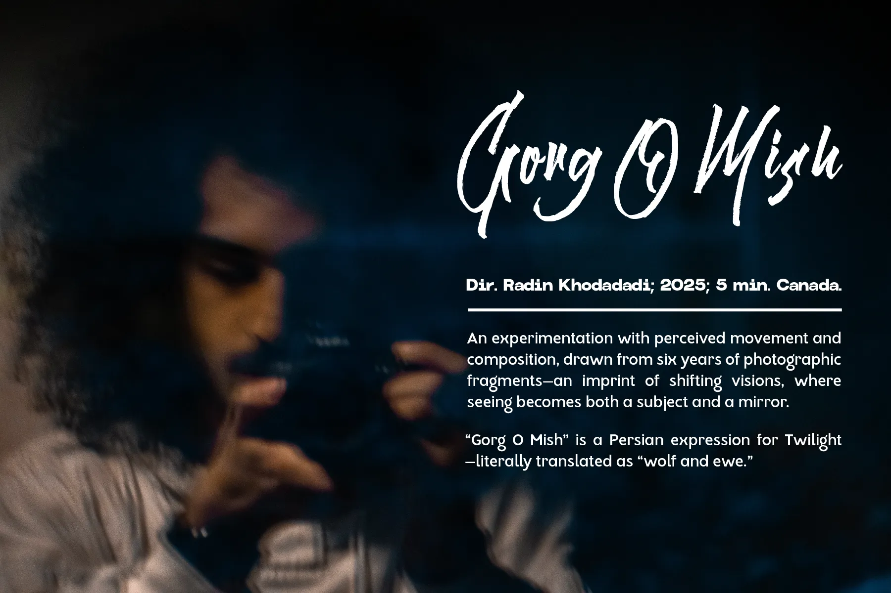

Gorg O Mish

Currently unavailable for online screening as it is in its festival run.
Upcoming screening:
TIFF Lightbox – July 31, 2025
Part of
MDFF Selects: Student Film Showcase Program
More info & tickets →
About the Film
Gorg O Mish is a Persian expression for
twilight—literally translated as “wolf and ewe.” It names that
liminal moment between day and night when shapes blur and
certainty falters, when you can’t distinguish a sheep from a wolf.
It’s a space of confusion, ambiguity, and quiet
transformation—where this film lives.
The idea began with an assignment that required in-camera editing:
shoot in sequence, no cuts or rearranging. It reminded me of Super
8 cameras and their one-frame capture mode, which led me to
experiment with stop-motion photography. I focused on moments of
subtle movement—either in the subject or through camera motion—and
later returned to the project to integrate my photography archive,
collected over six years. Without the constraints of in-camera
editing, I restructured the footage—tightening the sequence until
the compositions and their relationships began to speak
intuitively.
Sound became another form of experimentation. Since many of the images were long exposures, I wanted the audio to reflect that lingering, atmospheric quality. Using contact microphones, I recorded the vibrations of objects like street lights, SkyTrain windows, and the oven as water boiled. I also captured the resonance of my turntable while playing “Roads” by Portishead and distorted it heavily with feedback. A bass line from Radiohead’s “Nude” was sampled and manipulated in a similar way, contributing to a meditative, immersive soundscape.
I initially tried adding a voice-over to provide narrative
clarity, but it felt imposed. The images already carried a rhythm
and emotional weight of their own. Themes like memory, migration,
self-reflection, and the passage of time emerged through the
edit—not as fixed ideas, but as undercurrents open to
interpretation.
I see Gorg O Mish as a personal, intuitive document. It’s
shaped by my shifting way of seeing—but remains open to what each
viewer might find in it.
Stills

.webp)

.webp)
.webp)
.webp)